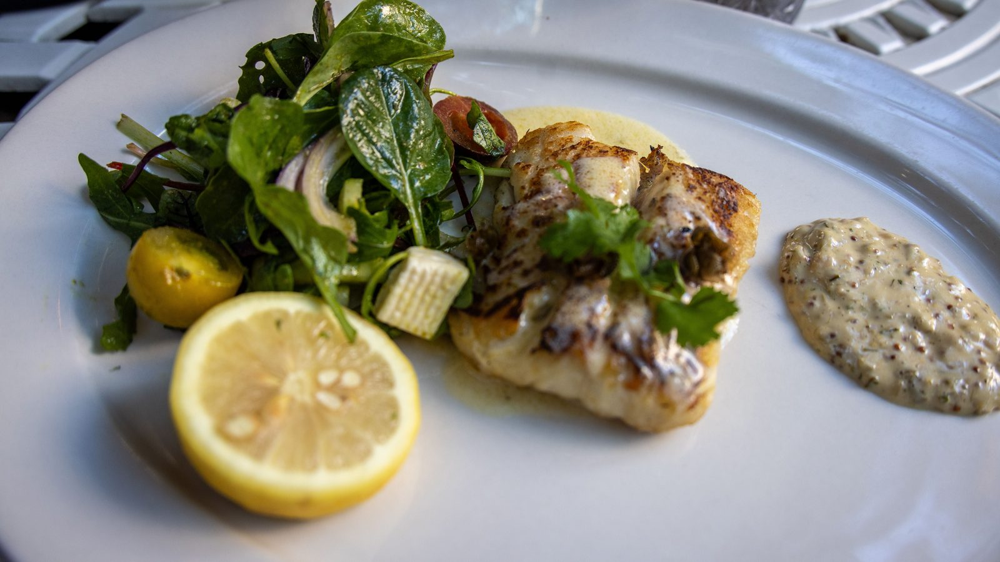

Bombinhas · Turismo
Bombinhas · TurismoJustiça manda tirar em 30 dias o portão que fecha a rua de acesso à Praia da Sepultura, em Bombinhas
Outro assunto de Bombinhas que mexe com quem vive de receber visitante.
A Prefeitura de Bombinhas fechou a conta da segunda Rota da Tainha. Foram 2.790 pratos vendidos, contra 1.740 no ano passado, e a maior parte do público saiu de casa ali mesmo.
Em 30 segundos · Modo de Leitura, formato original Santa Informa
A Rota da Tainha de Bombinhas fechou a segunda edição com 2.790 pratos vendidos.
Foram 2.075 pratos de tainha e 715 de frutos do mar.
Participaram 13 restaurantes, de 27 de maio a 2 de agosto.
O crescimento sobre a primeira edição, de 2025, foi de 60,3%. Naquele ano foram 1.740 pratos.
O faturamento dos participantes subiu, em média, 18,62%.
Houve 1.831 avaliações, feitas por 65,62% dos clientes.
As notas médias ficaram em 9,8 para restaurante e atendimento e 9,7 para o prato.
Entre os 1.182 clientes identificados, 43,5% moram em Bombinhas.
TurismoPublicada em Redação Santa Informa

A Prefeitura de Bombinhas divulgou o balanço da segunda edição da Rota da Tainha, o roteiro gastronômico que reúne restaurantes da cidade em torno do peixe da temporada. Foram 2.790 pratos vendidos entre 27 de maio e 2 de agosto de 2026, com 13 restaurantes participantes. Desse total, 2.075 pratos foram de tainha e 715 de frutos do mar.
Na primeira edição, em 2025, a Rota vendeu 1.740 pratos. A segunda, portanto, cresceu 60,3%. O reflexo no caixa apareceu: segundo a Prefeitura, o faturamento dos estabelecimentos participantes subiu, em média, 18,62% no período. Para restaurante de cidade litorânea, esse é o pedaço do ano em que a conta costuma ser mais apertada, porque a temporada já passou e o verão ainda está longe.
O dado que mais chama atenção não é o de turista. Dos 1.182 clientes identificados, 43,5% moram na própria Bombinhas e 33% vieram de municípios vizinhos. Do Paraná saíram 13,4% e do Rio Grande do Sul, 6,2%. Ou seja, o roteiro girou dinheiro de gente daqui, e não só de quem veio de fora. É um resultado diferente do que a temporada de verão costuma entregar.
Foram registradas 1.831 avaliações, o que corresponde a 65,62% dos clientes. A média para restaurante e atendimento ficou em 9,8. Para prato e experiência, em 9,7. Na entrega dos resultados, três casas foram premiadas: o Mar Criado, Cultura e Sabor, na categoria Melhor Experiência; o Canto do Macuco, com o prato melhor avaliado; e o Nico's Restaurante, em maior engajamento e maior número de pratos vendidos.
Bombinhas fica a poucos minutos daqui e enfrenta o mesmo problema: cidade cheia em janeiro e vazia em junho. A Rota da Tainha é uma tentativa de resolver isso com o que a região já tem, que é peixe fresco e cozinha de beira-mar. O secretário de Turismo e Desenvolvimento Econômico, Carlos Eduardo Oliveira Boaventura, disse que "a gastronomia é um segmento muito importante para a geração de empregos". A organização foi da Prefeitura com apoio do Sebrae.
O resumo de 30 segundos está no topo e a versão completa é o texto acima. Aqui ficam as três leituras da casa sobre o mesmo assunto.
Clara, a otimista
Sessenta por cento de crescimento em um ano é número de fazer inveja em qualquer setor. E o melhor é onde ele aconteceu: fora da temporada, quando o restaurante costuma ficar de porta encostada.
Tem outra coisa boa escondida na conta. Quase metade de quem comeu mora em Bombinhas. Isso quer dizer que a cidade aprendeu a consumir o que ela mesma produz, e não depende só do carro de placa de fora para o caixa fechar.
Seu Prudêncio, o criterioso
Merece atenção a base de comparação. Crescer 60% partindo de 1.740 pratos é mais fácil do que crescer 10% partindo de vinte mil. O resultado é bom, mas ainda é um roteiro pequeno, com 13 casas, e vale acompanhar se a curva se mantém na terceira edição.
Vale acompanhar também o que o número não diz. A Prefeitura informou o aumento médio de faturamento, e não o total. Média esconde diferença: pode ter casa que dobrou e casa que ficou parada. Uma sugestão útil ao organizador é publicar a faixa, do menor ao maior resultado, porque isso ajuda o restaurante que ainda está de fora a decidir se entra.
Dito isso, o desenho do programa acerta no ponto principal. Concentrar esforço entre maio e agosto, com prato de preço definido e avaliação do cliente registrada, transforma uma ideia solta em dado que se compara ano a ano. É assim que política de turismo para de ser palpite.
Caco, o sarcástico
Bombinhas descobriu que vende mais peixe quando avisa que está vendendo peixe. A cadeia produtiva agradece.
Nota 9,8 no atendimento. Fora de temporada, com salão vazio e garçom sobrando, é fácil ser simpático. Quero ver em 15 de janeiro, com fila na porta e a família toda pedindo ao mesmo tempo.
E 43,5% dos clientes moram na própria cidade. O morador finalmente conseguiu almoçar em Bombinhas sem esperar quarenta minutos por uma mesa. É o que a gente chama de milagre da baixa temporada.
Fontes: Prefeitura de Bombinhas, balanço publicado em 21 de agosto de 2026, com os 2.790 pratos vendidos, a divisão entre 2.075 de tainha e 715 de frutos do mar, os 13 restaurantes, o período de 27 de maio a 2 de agosto, o crescimento de 60,3% sobre os 1.740 pratos da primeira edição, o aumento médio de 18,62% no faturamento, as 1.831 avaliações feitas por 65,62% dos clientes, as notas 9,8 e 9,7, a origem dos 1.182 clientes identificados, os restaurantes premiados, a fala do secretário Carlos Eduardo Oliveira Boaventura e o apoio do Sebrae. Sobre o comportamento de gasto do visitante no litoral, veja a matéria da pesquisa da Fecomércio SC.
Bombinhas · TurismoOutro assunto de Bombinhas que mexe com quem vive de receber visitante.
 Litoral · Economia
Litoral · EconomiaO pano de fundo de quem depende de restaurante cheio no litoral.
 Itapema · Turismo
Itapema · TurismoComida e evento de rua também puxam movimento na baixa temporada aqui do lado.